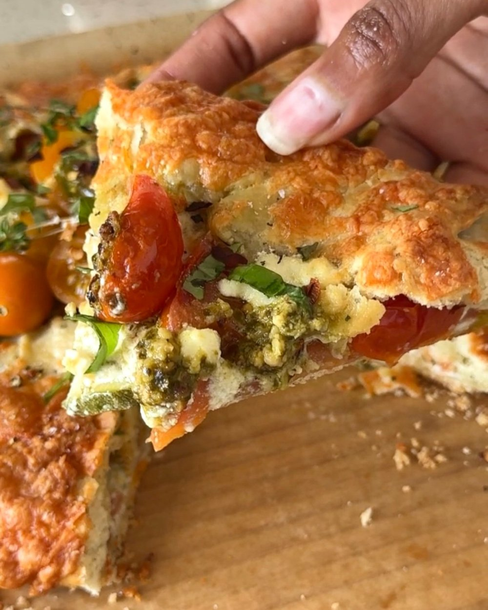

Tomato And Zucchini Galette

HOW TO MAKE THIS TOMATO AND ZUCCHINI GALETTE
- To make this flaky herby galette at home, first start with the pie crust...
- Flatten into a 1" disc and wrap it in plastic wrap. Refrigerate for at least 30 minutes...
- Spread soft cheese onto the rolled-out pie dough...
- Dollop the pesto and ricotta on top of the veggies...
- Remove from the oven and serve with olive oil, herbs, and seasoning.

INGREDIENTS
- Pie Crust
- Flour
- Sugar
- Rosemary
- Thyme
- Butter
- Galette
- Soft, spreadable cheese
- Tomatoes
- Eggs
- Zucchini
- Pesto
- Ricotta
- White cheddar cheese
- Basil, rosemary, thyme, salt, pepper, red pepper flakes
HOW LONG DOES THIS GALETTE TAKE TO MAKE?
There are three steps to making this easy tomato galette at home:
- Pie crust: 15 minutes, plus 30 minutes of rest time
- Galette filling: 15 minutes
- Baking: 30 minutes
Start to finish, this recipe will take about 1 and a half hours to make.